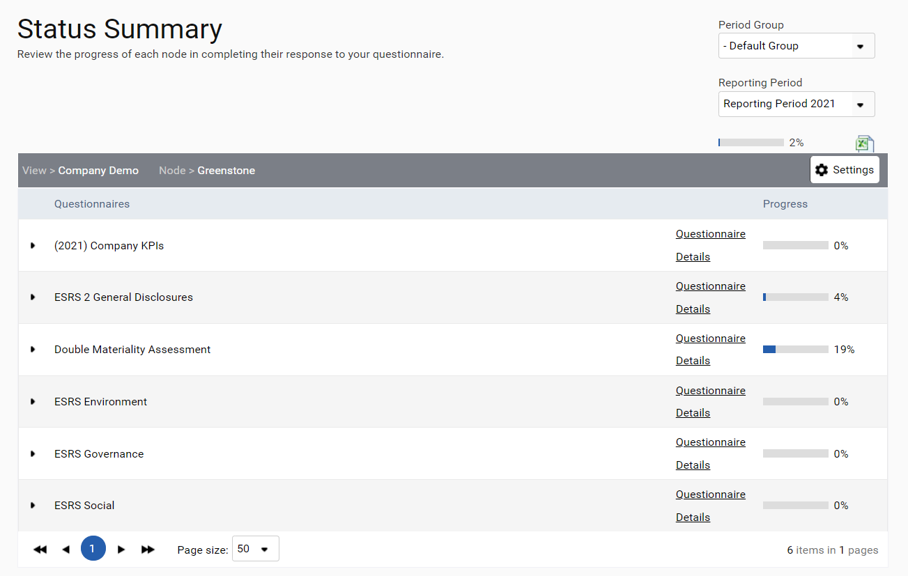
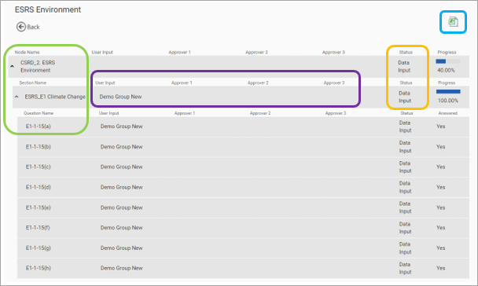
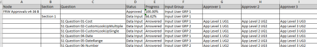

By clicking on ‘Reporting> Questionnaire Status’, the details of which user groups have been assigned to respond to questions or approve the questions are now displayed on the Status Summary screen.

The screenshot below shows what is displayed on this screen. In the purple outline the User Input and Approver groups can be seen whilst in the orange outline the Status of the questionnaire for each node is shown.
To see the details for a section or question please expand these using the up and down arrows as shown in the green outline.

There is also an export to Excel for this screen to allow off-screen analysis as seen in the screenshot below. To export this spreadsheet, use the Excel icon as shown in the blue outline in the screenshot above.
